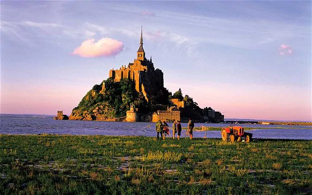

Why France?
France, in Western Europe, encompasses medieval cities, alpine villages and Mediterranean beaches. Paris, its capital, is famed for its fashion houses, classical art museums including the Louvre and monuments like the Eiffel Tower. The country is also renowned for its wines and sophisticated cuisine. Lascaux’s ancient cave drawings, Lyon’s Roman theater and the vast Palace of Versailles attest to its rich history.

The weather
Abta attributes part of France’s appeal to “a mild climate in the months of spring and autumn.” And then, there are the lovely, warm summers, attracting waves of sun-seekers every year. “Of the 60 per cent of French people who go away on holiday, some 80 per cent stay within their own country,” points out Anthony Peregrine, author of Telegraph Travel's Le Rosbif Writes column, and our Provence expert. “Could there be a better advert for the place as a vacation destination?”
The heritage sites
We’re talking quality, not quantity here. France actually lags behind some countries in terms of the sheer number of UNESCO World Heritage sites (Italy has the most with 51, with France in fourth place on "just" 41). But it’s the profile and raw appeal that counts, as Anthony again points out. “Few other nations have so well looked after their past – cathedrals, châteaux and what-have-you – so that it's present in the present,” says Anthony. “Then again, few other nations, also, are so little talented in presenting this past in an engrossing, or even interesting, manner. But sites like the Loire châteaux or Mont St Michel are strong enough to resist even the French drive to crashing historical tedium. So we all go all the same.”
